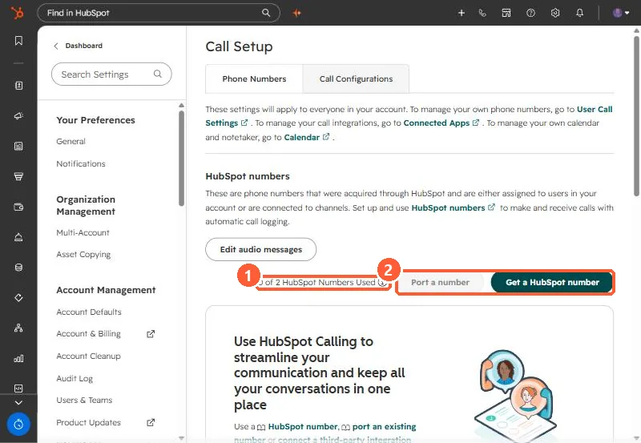
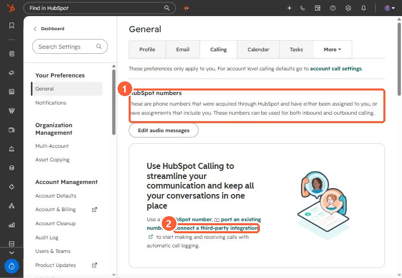
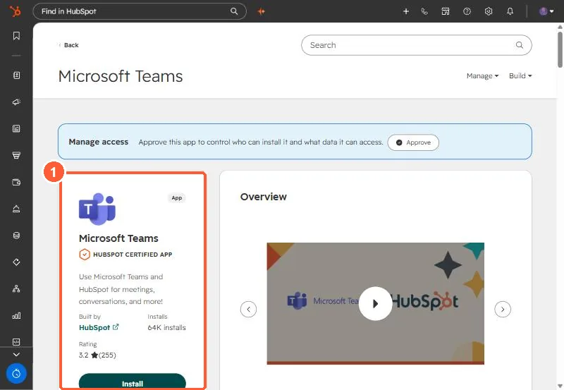

Short answer
Calling in HubSpot needs an assigned Sales Hub or Service Hub seat (Starter and up). You can use a HubSpot-provided number (from the supported countries list, and you do not need to be there), port a number, register your own (higher risk of spam labels and blocked calls), or connect a calling app from the Marketplace, which then handles calls instead of HubSpot's minutes. Inbound calls work on HubSpot numbers; for apps it depends on the provider. Microsoft Teams Phone can log calls to HubSpot, but phone call recordings and transcripts do not sync, only meeting ones.
1. Pick a number
The Call Setup page in calling settings shows how many HubSpot numbers you have used (1) and the options to get or port one (2):


| Option | Notes |
|---|---|
| HubSpot-provided number | From the supported countries list; you do not have to be located there. Handles inbound calls without a third-party app. |
| Ported number | Move an existing number to HubSpot. Porting has its own supported countries list. |
| Registered number | Your own number with verified caller ID. Cannot be toll-free. Not owned by Twilio, so calls are more likely to be marked spam or blocked, and many countries may have connection issues. |
| Calling app | A Marketplace provider or your own through the Calling Extensions SDK. Calls no longer use HubSpot's calling minutes. |
HubSpot also limits calls to special service numbers and high-fraud-risk numbers. For countries not on the list, HubSpot points to a Twilio Connect account or a calling app.
2. Personal calling settings and the microphone
Each user's calling preferences show their HubSpot numbers (1) and a link to third-party integrations (2):


When calls have no audio, HubSpot says most issues come from the computer or browser: allow the microphone for HubSpot in the browser, pick the right input device, try another network, and test with a different headset. Calling is not supported in Internet Explorer.
3. Calling apps and inbound calls
- Depending on the provider, a calling app opens as a calling remote and window, a remote only, or the calling widget.
- Apps built for inbound calls open a separate calling window that must stay open to receive calls; you may need to sign in to the provider there.
- Not every app supports inbound calls in HubSpot. What happens during and after a call varies by provider.
- You cannot call from a custom object record with a calling app.
4. Microsoft Teams Phone
With the Microsoft Teams app connected (see Teams setup), turn on call logging under Connected Apps, Microsoft Teams, Settings, Teams Phone: For outbound calls and For inbound calls.


Calls log to the contact, its primary company and associated deals, when:
- the HubSpot user is mapped to their Teams user,
- the contact already exists,
- the Teams number matches the contact's Phone number or Mobile phone number exactly, including country and area code, and
- the contact's email does not match a HubSpot user.
Calls take about 15 minutes on average, and up to 60, to appear. Click to call is set outside HubSpot: on Windows, make Microsoft Teams the default app for TEL links, then the external link icon next to a phone number starts a Teams call. For inbound calls, Teams can open the contact record through a HubSpot redirect URL in Teams' call settings.
5. Teams Phone recordings and transcripts
HubSpot syncs recordings and transcripts for Teams meetings, not Teams Phone calls, and its call logging article does not mention recordings. Getting call recordings in means a custom pipeline:
- Microsoft side: Microsoft Graph exposes call recordings and transcripts, with application permissions and an application access policy on the tenant. Graph transcript access has been off by default since July 31, 2026, so an admin must turn on the transcript API setting in Teams meeting settings or calls return 403. Plain PSTN phone calls are the weak point: a Microsoft Tech Community thread ends without a supported way to fetch them with application permissions.
- HubSpot side: create or update the call with the recording URL through the CRM API, and attach a transcript with HubSpot's third-party transcripts API (utterances with speaker, text and start and end times). That API is OAuth only and needs the calling transcripts scopes.
- Glue: a tool such as Make can run it: an Azure app calling Graph, a webhook or polling trigger, a contact match by phone number, and the HubSpot calls. Store the recording as a link to the OneDrive or SharePoint file.
Test first whether your Teams Phone calls produce recording or transcript entries in Graph at all. That decides whether this route works. This section is research; I did not build the pipeline.
6. What is changing for 2027
- Carriers distrust registered numbers. HubSpot warns that registered numbers face more spam labeling and blocking. HubSpot-provided or ported numbers avoid that.
- Microsoft locked down transcripts. The July 2026 Graph change means any call or meeting transcript integration needs an admin to turn the setting on.
- Check inbound support per app. HubSpot says not every calling app supports inbound calls in HubSpot, and features vary by provider.
Common questions
Do I need a Sales seat to make calls?
Yes, an assigned Sales Hub or Service Hub seat, whatever kind of number you use.
Why are my outbound calls marked as spam?
Registered numbers use verified caller ID and are not owned by Twilio, so carriers block or label them more often. Use a HubSpot-provided or ported number.
Teams calls are not logging.
Check user mapping, that the contact exists, and that the phone number matches exactly with country and area code. Then wait up to an hour.
Can HubSpot record Teams Phone calls?
Not natively. Only Teams meeting recordings and transcripts sync.
Sources
- HubSpot Knowledge Base: Calling supported countries and phone number availability
- HubSpot Knowledge Base: Use a calling app to make and receive calls
- HubSpot Knowledge Base: Microphone not working when making calls
- HubSpot Knowledge Base: Log Microsoft Teams calls to HubSpot records
- HubSpot Knowledge Base: Sync Teams meeting recordings and transcripts
- HubSpot developer docs: Third-party transcripts
- Microsoft Q&A: Graph transcript access change
- Microsoft Tech Community: Teams Phone recordings via API